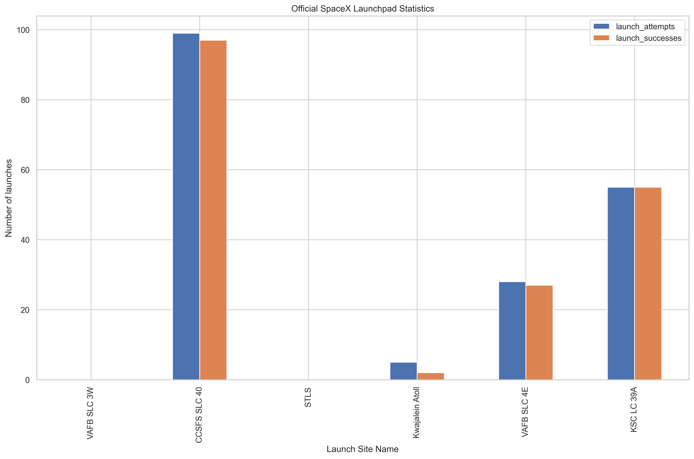
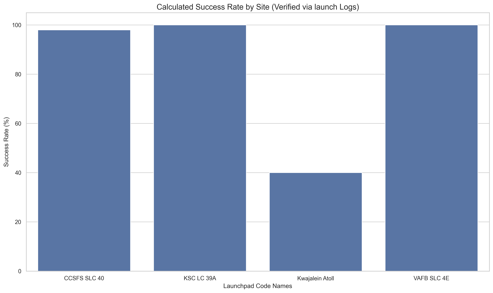
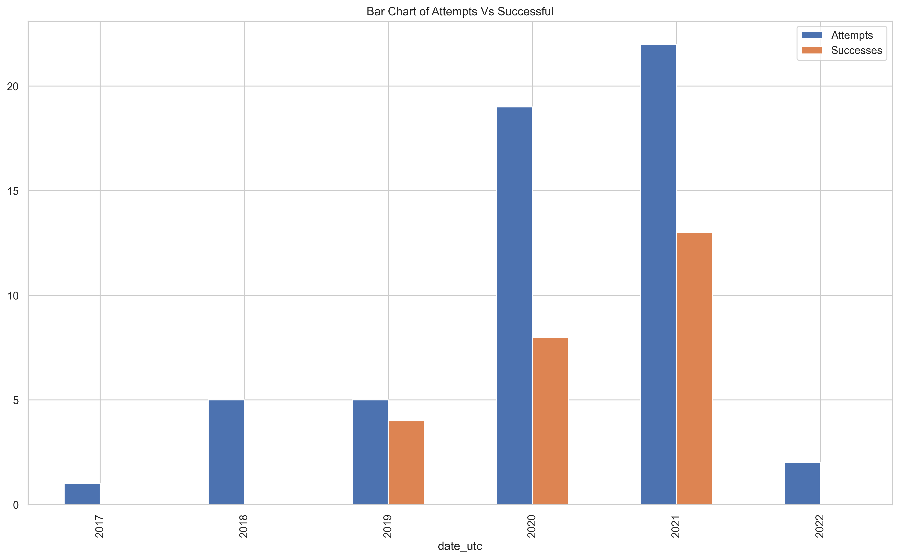
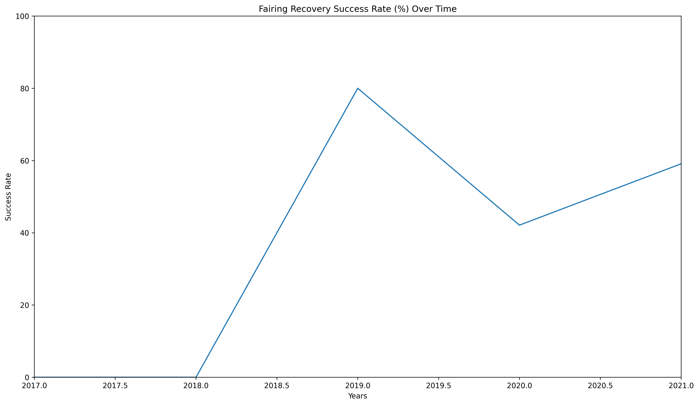
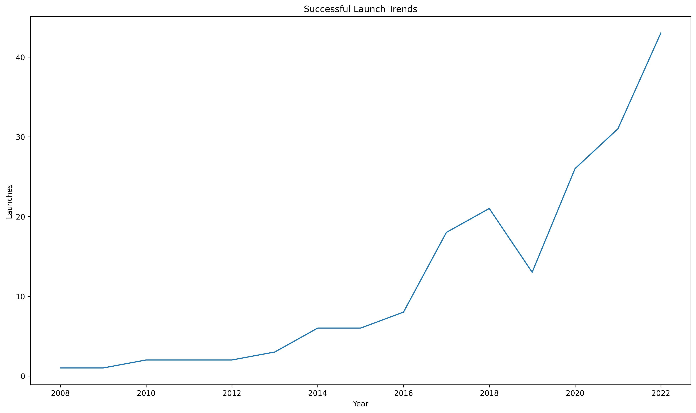

The Challenge of Official Statistics
While SpaceX provides summarized success rates, I wanted to build a system that verifies these numbers independently. The challenge was to pull multi-dimensional data from disparate API endpoints (Launches, Launchpads, and Rockets) and consolidate them into a single source of truth for auditing purposes.
Objective & Scope
My objective was to automate the data extraction process and perform exploratory data analysis (EDA) to answer two key questions:
- How has recovery technology improved mission success rates over time?
- Does a specific launchpad correlate with mission failure rates?
The "Audit" Mindset in Data Joining
Applying my Chartered Accountancy background, I approached the data joining process like a financial reconciliation. Instead of using the pre-calculated success columns in the Launchpad table, I performed an Inner Join between the raw mission logs and the infrastructure metadata.
Acutal Data From SPACEX
"I compared the actual SPACEX data using the launchpads table."

Fig 2: Plotting calculated success rates provided by SPACEX API.
Verification Logic
"I converted boolean success flags into binary (1/0) integers and calculated the mean across joined datasets to verify official reports."

Fig 1: Manually calculated success rates verified via raw launch logs.
I utilized Seaborn for high-fidelity visualizations, focusing on "failure gaps"—the visual distance between total attempts and successful outcomes. This allowed for an immediate visual audit of each launch site's operational efficiency.
Fairings Recovery Attempts
"Analyzing the attempts of fairing recovery and successes."

Fig 3: Fairings recovery attempts.
Fairings Recovery Success trend
"Analyzing the Success Rate of Recovery Over the Years."

Fig 4: Fairings recovery trend.
Insights & Takeaways
Infrastructure Growth
Verified that with the improvement in technology, successful launches have skyrocketed since 2020.
Recovery Trends
Observed that with time, more money is invested in improving recovery systems so as to reduce the overall cost of launcing new Rockets by "Reusing" Fairings.

visualization of successful launch trend
Want to see the raw Python code?
The full Jupyter Notebook, including API extraction logic and Seaborn formatting, is available on my GitHub.
Explore Repository